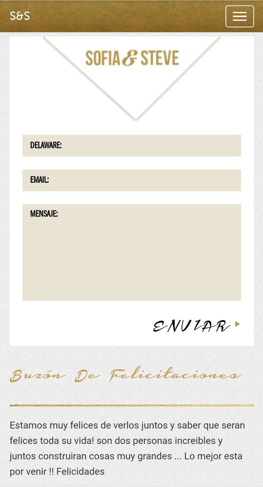
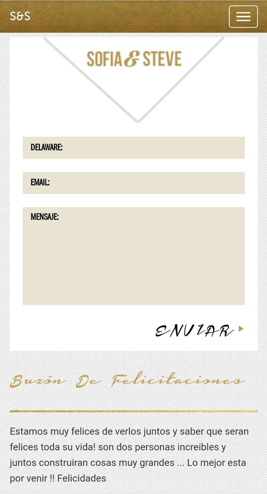
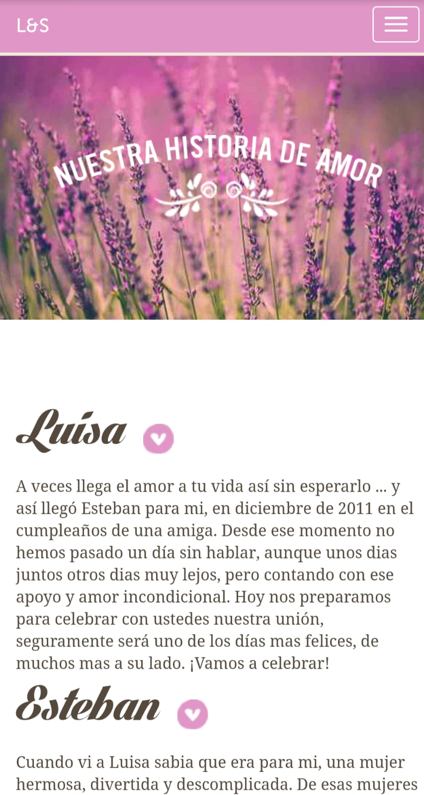
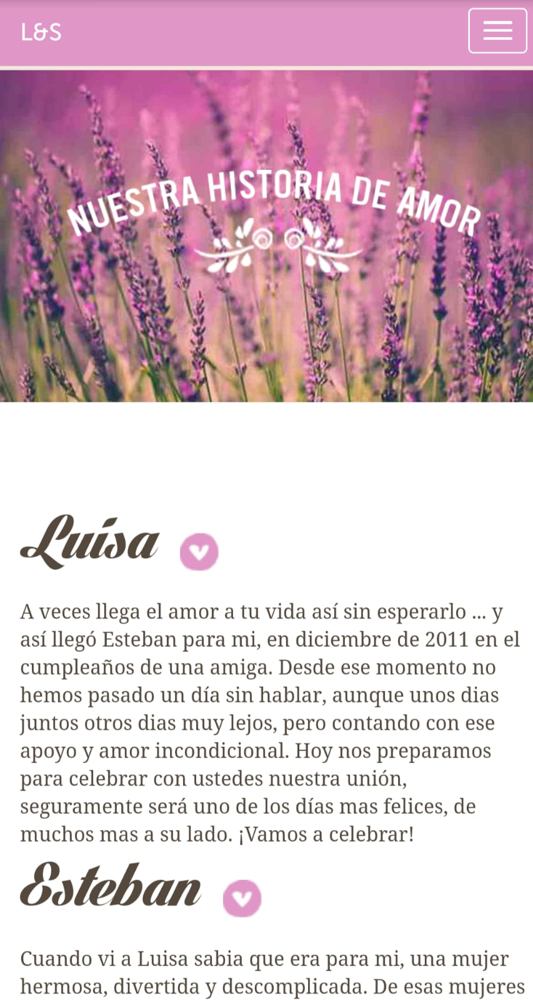

TIPOS DE SITES
Clásico

 

Atemporal, y para gente sobria, el estilo Clásico se caracteriza por una gama de tonos ocre en donde la formalidad, asociada a la distinción impera
Romántico
 


El estilo romantico, se caracteriza por sus colores pastel y su tonalidad tenue. Ideal para casamientos campestres o donde impera el estilo desenfadado
Moderno


En el estilo moderno los colores llamativos son los que más sobresalen. Expeditivo, con aires posmodernos que plasman la epoca actual